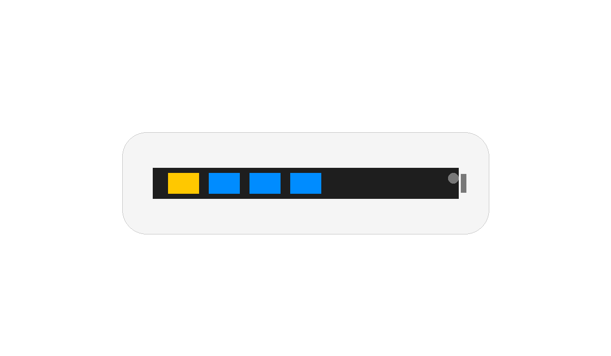
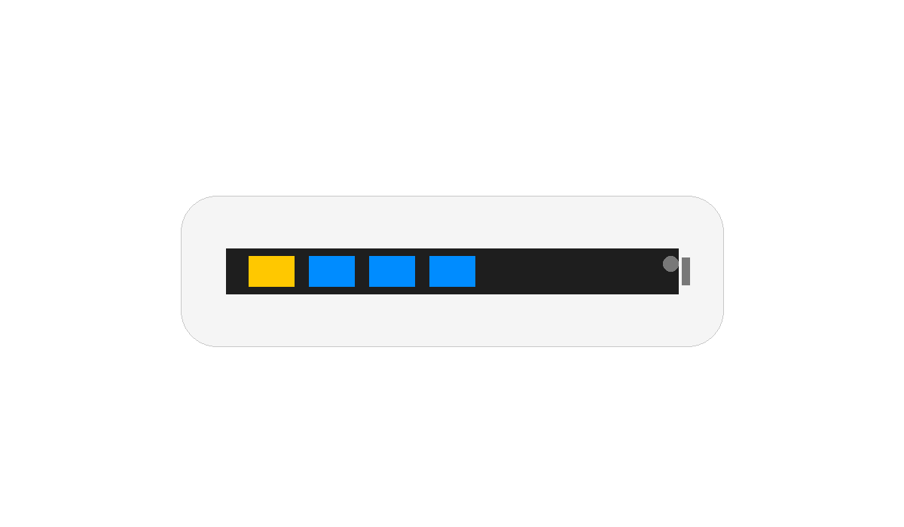

White Cat AX3000
Fast, stable, quiet. AX3000 dual‑band. Low‑latency NAT.
 

Wi‑Fi 6 AX3000
160 MHz + OFDMA & MU‑MIMO for smooth 4K streaming & gaming.
Low‑latency by design
Hardware fast‑path, smart QoS — steady pings under load.
Stronger coverage
Beamforming, high‑gain antennas built for real homes.
Wired where it matters
1× GbE WAN + 3× GbE LAN for consoles/TV/backhaul.
Secure by default
WPA3, guest & IoT isolation, DNS over TLS 1.3.
Compact & silent
Fanless, unobtrusive design that blends in and runs quiet.
Technical Specifications
ChipsetMediaTek MT7981B
CPUDual‑core @ 1.2 GHz
OSOpenWrt 24.10
Memory512 MB
Flash128 MB
Wi‑Fi802.11 a/b/g/n/ac/ax (Wi‑Fi 6)
Rate2.4 GHz 600 + 5 GHz 2400
LAN3 × 10/100/1000 Mbps
WAN1 × 10/100/1000 Mbps
SecurityWPA2‑PSK / WPA‑PSK / WPA3
Power12 V 2 A